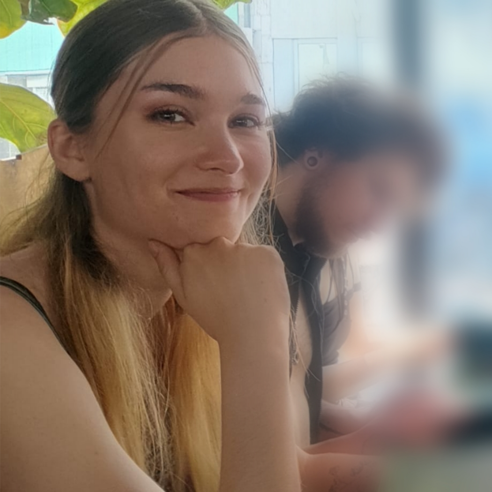

Hi! I'm Julia (but most people call me Julie).
I'm a university student from Germany, studying Games & Immersive Media (B.A.) at Hochschule Furtwangen University.
In my own game projects, I place a strong emphasis on narrative, as I've been writing stories for over three quarters of my life — even before I could write, I asked my grandma to be my pen.
Currently, I'm in my first semester and working on an unannounced personal project.
I'm a university student from Germany, studying Games & Immersive Media (B.A.) at Hochschule Furtwangen University.
In my own game projects, I place a strong emphasis on narrative, as I've been writing stories for over three quarters of my life — even before I could write, I asked my grandma to be my pen.
Currently, I'm in my first semester and working on an unannounced personal project.